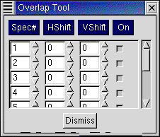

The Overlap Tool allows a number of spectra (upto 10) to be overlapped in the current spectrum window and the overlapped spectra can be moved both horizantally (HShift) and vertically (VShift) by supplied ammounts. The spectrum number to be overlapped must be provided in the first column and it can be toggled on or off by the button in the last column.